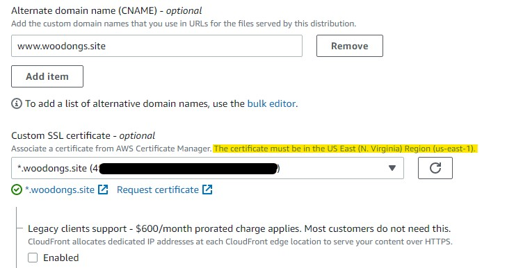
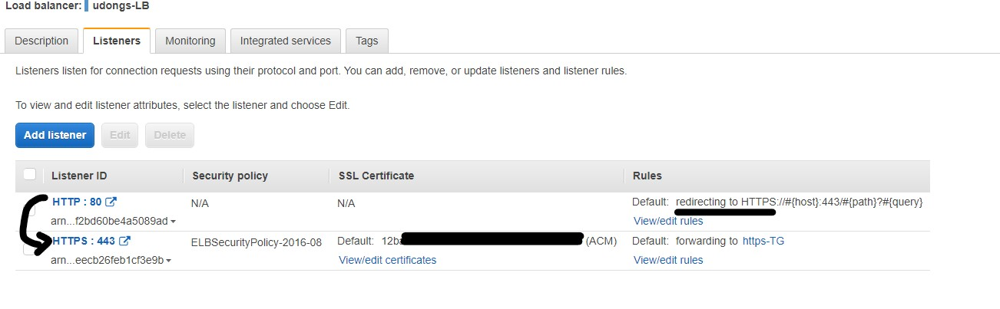
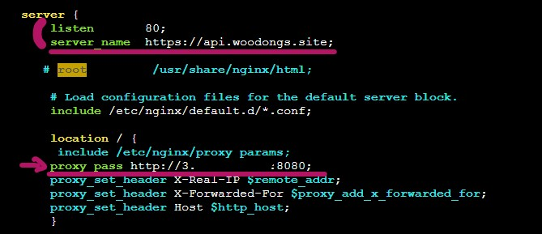
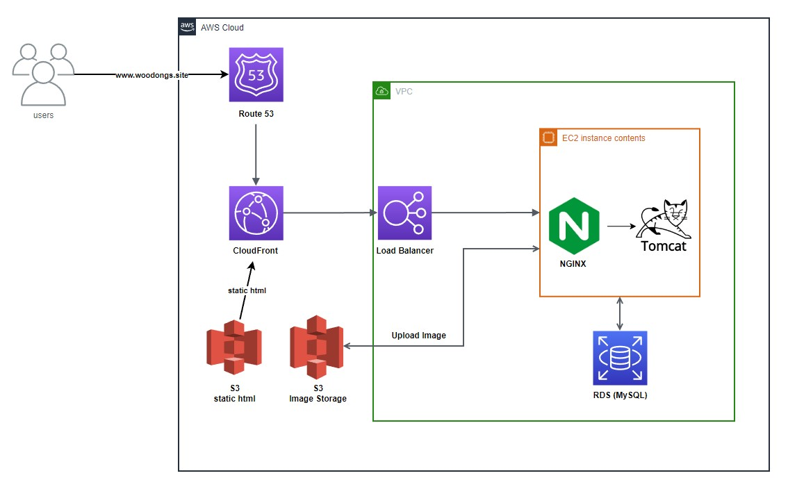

HTTPS붙여서 프로젝트 배포하기
메인 프로젝트 관련 새로 배운 점 정리
개인적으로 프로젝트를 하면서 가장 힘들었던 부분이었다.
그래도 막상 찾아서 해보고 다른 팀원에게 설명하고 이렇게 정리를 해보니 처음보다 어느 정도 흐름에 대해서는
처음보다 감을 많이 잡은 것 같다.
다만 세부적인 개념들을 이해하고 진행한 게 아니라 작동이 되게 하는 것에 포커스를 두었었기 때문에 관련 개념들을
한번 돌아볼 필요가 있다고 생각함. HTTPS 원리, 프록시 개념, 도메인/서브도메인 원리, HTTPS 통신 방식 등..
http로는 위치 기능 사용 불가
프리 프로젝트 당시에 아쉬웠던 점들 중 하나가 바로 https의 적용이었다.
따라서 이번 메인 프로젝트에서는 꼭 사용해보고 싶었지만 일단 기능들을 전부 돌아가게 어느 정도 완성은 해놓고
시간이 남는다면 그때 붙이는 방향으로 정했었다.
일정의 중반쯤에 들어설 무렵 첫 배포를 진행해보기로 했다. 방식은 프리때와 마찬가지로 nginx로 리액트를 돌리고
스프링은 내장 톰캣으로 돌리는 방식으로 정했다.
(비효율적인 방식이다 - 하지만 이때는 이 방법밖에 몰랐음)
그렇게 두 개의 서버가 돌아가고 위치정보를 받아오려 했는데 계속 받아지지 않았다.
크롬 설정에서 보니 위치정보 허용 자체를 할 수 없도록 토글이 고정되어 있었다.
알고 보니 거의 모든 브라우저에서 http를 사용하면 위치 정보를 받을 수 없도록 되어있었다는....
우리는 위치정보를 GeoLocation으로 받아오기 때문에 https의 도입만이 방법이었다.
이전에 시도했던 방식인 GeoLite2를 사용해 IP 정보로 위치 정보를 따올 수 있었으나 정확도가 떨어지고
영문 주소로 반환되는 문제가 있어 포기한 방식이다.
일정이 촉박한 상황에서 위치를 활용한 테스트를 빨리 해야 했기 때문에 바로 https를 붙이기로 정했다.
Certbot 시도
https를 위해 certbot를 사용할 수 있다는 것을 프리 프로젝트때 검색해서 알고 있어 바로 도입해보았다.
다만 문제는 나는 지금 하나의 EC2 인스턴스에 리액트와 스프링 둘 다 돌리고 있었기 때문에 nginx로 리액트를 배포하고 있는
상황에서 어떤 식으로 접목을 시켜야 할지 감이 오지 않았다.
백/프론트 각각 https를 붙이면 되지 않을까 하고 여기저기 찾아보며 진행했었지만 결국 실패했고
시간은 시간대로 허비하였다.
Certbot을 발급받아 nginx에 경로 지정하고, pem 키를 복사해서 .p12타입으로 바꾼뒤 스프링에 넣고 돌리는 방식이었다.
맞는 방식이라 생각했었지만, 포트나 요청URL 설정 같은 것들이 잘못되지 않았나 싶다.
지금 생각해보면 한 EC2 안에 백/프론트 서버가 공존한다는 게 좋은 방식은 아니었던 것 같다.
예를들어, EC2가 먹통이 되더라도 사용자에게 이상이 있다라고 상황을 알려줘야 하는데 이걸 정적페이지에서 해야한다.
근데 그 정적페이지를 띄울 Nginx마저 먹통이 되버리기 때문에 사용자 입장에서는 ???스러울 수 밖에 없음
분리 배포 방식으로 변경
프로젝트 기간 중 멘토링을 받을 수 있는 시간이 있었는데 인프라 쪽 경력이 있으신 프론트엔드 멘토 분의 조언이
결과적으로 큰 도움이 되었다. 멘토 분은 내가 했던 방식으로 하나의 인스턴스에 백엔드와 프론트엔드가 같이
공존하는 경우는 거의 없고 분리 배포를 해야 한다, 프론트 부분은 s3와 CloudFront를 사용하거나 vercel같은 툴을
사용하는 게 통상적이다라는 부분이었다.
개인적으로 vercel을 사용해보니 불편하다고 생각이 들어 AWS에 있는 기능들을 많이 활용해보자 하는 차원에서
S3에 리액트 빌드 파일을 넣고 CloudFront로 정적페이지 배포를 하는 방식으로 진행했다.
이로써 백엔드는 EC2 안에서 돌아가고 프론트엔드는 CloudFront에서 배포되어 분리 배포가 가능해졌다.
배포는 했으니 이제 HTTPS를 붙이기로 했다.
CloudFront에서는 기본적으로 http -> https 리다이렉션 기능이 있길래 AWS Certificate Manager(ACM)을 사용하면
손쉽게 적용할 수 있었다. 다만 CloudFront에서 ACM은 N.Virginia리전 에서 발급 받은 것만 사용할 수 있어서
리전 변경 뒤 적용했다.
ACM

스프링은 Certbot에서 받은 키로 https, CloudFront에서도 https가 적용되었기 때문에 이제 다 되었다고 생각했다.
하지만 테스트 결과 인증서가 불일치한다는 오류가 자꾸 나왔다. 서버 쪽에서 다른 조치를 해보기로 했다.
https - http 통신?
내가 얻은 결론은 일단 인증서 발급 주체를 통일해야 하는 것이었다. 따라서 고민하면서 생각해본 방법은 다음과 같았다.
Info
- EC2를 하나 더 만들어 프론트, 백 분리해서 배포하고 Certbot 각각 적용하는 방식
- ACM을 파일로 받아서 스프링에 넣고 돌리는 방식
1번은 말은 되었지만 프리티어를 사용하고 있었기에 과금의 부담이 있어 포기했고 2번은 애초에 불가능했다.
ACM은 pem이나 ppk처럼 파일형식으로 받을 수 없다고 한다. [링크]
그렇게 2일 정도를 계속 구글링만 하다가 nginx를 활용하는 다른 방법을 찾게 되었다.
Reverse Proxy에 대한 키워드였는데 이걸 활용하면 Certbot 없이 서버의 http와 프론트의 https가 통신이 가능해 보였다.
간단하게 보면, https요청이 들어오면 해당 요청을 nginx에서 먼저 받은 뒤에 정해진 스프링 서버로 보내버리는 방식이다.
이를 위해서는 Route 53에 추가설정을 해야 하고 LoadBalancer를 사용해야 했다.
해당 키워드를 알고 나니 검색이 훨씬 수월했고 내가 원하는 자료들도 쏟아져 나오기 시작했다. 마치 금광 같았던..
LoadBalancer와 Route 53
이번 프로젝트에서는 woodongs.site 도메인을 가비아에서 구입해 사용했다. (우동스 - 우리 동네 스터디 ....)
따라서 가비아와 AWS연동을 위해 Route53에서 [woodongs.site]도메인에 대한 설정은 이미 되어있는 상황이었고
CloudFront 에서 [www.woodongs.site]으로 Alternate domain을 설정해놨다.
이제 [https://www.woodongs.site]에서 {EC2 ip주소}:8080으로 https 요청을 보내기만 하면 됐었다.
처음에는 바로 [woodongs.site]로 보내고 싶었으나 통신이 되지 않았다. 정확한 원인은 파악할 수 없었으나
ACM의 발급 대상을*.woodongs.site로 해놨었기 때문에 정황상 https가 적용되지 않아서 그런 것 같다.
이부분에서 삽질을 굉장히 많이 했었는데 할 때마다 프론트 코드의 URL 부분을 바꿔야 하는 경우가 빈번했고 그때마다
프론트 분들에게 요청하기 죄송해서 차라리 내가 프론트분들 코드를 받아 수정하고 빌드 하면서 테스트 하는 식으로
진행했다. 덕분에 리액트 프로젝트를 실행하고 빌드하는 법도 익히게 된 것 같다.
여러 고민과 구글링 끝에 리액트에서 서버로 보내는 모든 요청을 [https://api.woodongs.site]로 통일해서 보내기로 했다.
여기서 LoadBalancer를 추가했고 http요청이 오면 https로 바꿔주고 https요청은 EC2 ip주소의 80번 포트로 넘기도록
Target Group까지 설정해놓았다.
Load Balancer

여기까지 오면 클라이언트가 서버로 요청을 막 보낸 단계가 된다. 이 다음부터는 EC2 내부에서 일을 처리해야 하는데
여기서 Nginx가 사용된다. LoadBalancer를 통해서 80번 포트로 EC2에 요청이 오게되면 Nginx가 먼저 요청을 받은뒤
스프링 서버로 넘기는 Reverse Proxy 역할을 한다.
Nginx

기존의 프론트에서 바로 서버와 통신하는 방식이 되지 않아 다른 방법을 찾던 도중 적용하게 된 방식이지만
리버스 프록시를 사용하면 서버가 노출될 일이 적어서 안정성 측면에서 더 낫다고 하니 뜻밖의 이득인듯.
여기서 특이점은 Spring서버 자체는 http로 동작하고 있다는 사실이다.
이상적으로는 Spring서버에도 HTTPS를 붙여야 하지만 시간상 하지 못했었고 작동하는데 건들였다가 또 안될까봐
무서운것도 컸다. 유난히 이번 프로젝트때 이거 해볼까? 하고 건들였다가 다 안되서 고치느라 시간 낭비를 많이했다.
전체 흐름으로 보기
Overview

전체적인 흐름을 도식화해서 본다면 아래와 같을 것이다.
- 사용자가
[www.woodongs.site]로 접속한다. [www.woodongs.site]는 Route53을 통해 CloudFront의 정적페이지를 보여준다.- CloudFront에서
[https://api.woodongs.site]로 요청을 보낸다. - Route53에서 설정한 대로
[https://api.woodongs.site]는 로드밸런서로 이동 - 로드밸런서에서 해당 요청이 http면 https로 리다이렉트, https면 ec2에 80번 포트로 요청을 보낸다.
- nginx에서 80번 포트로
[https://api.woodongs.site]에서 요청이 들어오면 EC2 ip의 8080포트로 보낸다.